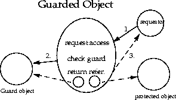

7.1 java.security.GuardedObject and java.security.Guard
Recall that the class AccessControlContext is useful when an access control decision has to be made in a different context. There is another such scenario, where the supplier of a resource is not in the same thread as the comsumer of that resource, and the consumer thread cannot provide the supplier thread the access control context information (because the context is security-sensitive, or the context is too large to pass, or for other reasons). For this case, we provide a class called GuardedObject to protect access to the resource, illustrated in the figure below.

The basic idea is that the supplier of the resource can create an object representing the resource, create a GuardedObject that embeds the resource object inside, and then provide the GuardedObject to the consumer. In creating the GuardedObject, the supplier also specifies a Guard object such that anyone (including the consumer) can only obtain the resource object if certain (security) checks inside the Guard are satisfied.
Guard is an interface, so any object can choose to become a Guard. The only method in this interface is called checkGuard. It takes an Object argument and it performs certain (security) checks. The Permission class in java.security implements the Guard interface.
For example, suppose a system thread is asked to open a file /a/b/c.txt for read access, but the system thread does not know who the requestor is or under what circumstances the request is made. Therefore, the correct access control decision cannot be made at the server side. The system thread can use GuardedObject to delay the access control checking, as follows.
FileInputStream f = new FileInputStream("/a/b/c.txt");
FilePermission p = new FilePermission("/a/b/c.txt", "read");
GuardedObject g = new GuardedObject(f, p);
Now the system thread can pass g to the consumer thread. For that thread to obtain the file input stream, it has to call
FileInputStream fis = (FileInputStream) g.getObject();
This method in turn invokes the checkGuard method on the Guard object p, and because p is a Permission, its checkGuard method is in fact:
SecurityManager sm = System.getSecurityManager();
if (sm != null) sm.checkPermission(this);
This ensures that a proper access control check takes place within the consumer context. In fact, one can replace often-used hash tables and access control lists in many cases and simply store a hash table of GuardedObjects.
This basic pattern of GuardedObject and Guard is very general, and we expect that by extending the basic Guard and GuardedObject classes, developers can easily obtain quite powerful access control tools. For example, per-method invocation can be achieved with an appropriate Guard for each method, and a Guard can check the time of the day, the signer or other identification of the caller, or any other relevant information.
Note that certain typing information is lost because GuardedObject returns an Object. GuardedObject is intended to be used between cooperating parties so that the receiving party should know what type of object to expect (and to cast for). In fact, we envision that most usage of GuardedObject involves subclassing it (say to form a GuardedFileInputStream class), thus encapsulating typing information, and casting can happen suitably in the subclass.
7.2 java.security.SignedObject
This class is an essential building block for other security primitives. SignedObject contains another Serializable object, the (to-be-)signed object and its signature. If the signature is not null, it contains a valid digital signature of the signed object. This is illustrated in the figure below.

The underlying signing algorithm is set through a Signature object as a parameter to the sign method call, and the algorithm can be, among others, the NIST standard DSA, using DSA and SHA-1. The algorithm is specified using the same convention for signatures, such as "SHA/DSA".
The signed object is a "deep copy" (in serialized form) of an original object. Once the copy is made, further manipulation of the original object has no side effect on the copy. A signed object is immutable.
A typical example of creating a signed object is the following:
Signature signingEngine =
Signature.getInstance(algorithm,provider);
SignedObject so =
new SignedObject(myobject, signingKey, signingEngine);
A typical example of verification is the following (having received SignedObject so), where the first line is not needed if the name of the algorithm is known:
String algorithm = so.getAlgorithm();
Signature verificationEngine =
Signature.getInstance(algorithm, provider);
so.verify(verificationEngine);
Potential applications of SignedObject include:
-
It can be used internally to any Java application environment as an unforgeable authorization token -- one that can be passed around without the fear that the token can be maliciously modified without being detected.
-
It can be used to sign and serialize data/object for storage outside the Java runtime (e.g., storing critical access control data on disk).
-
Nested SignedObjects can be used to construct a logical sequence of signatures, resembling a chain of authorization and delegation.
It is intended that this class can be subclassed in the future to allow multiple signatures on the same signed object. In that case, existing method calls in this base class will be fully compatible in semantics. In particular, any get method will return the unique value if there is only one signature, and will return an arbitrary one from the set of signatures if there is more than one signature.
CONTENTS | PREV
| NEXT
Copyright © 1997-1999 Sun Microsystems, Inc. All Rights Reserved.